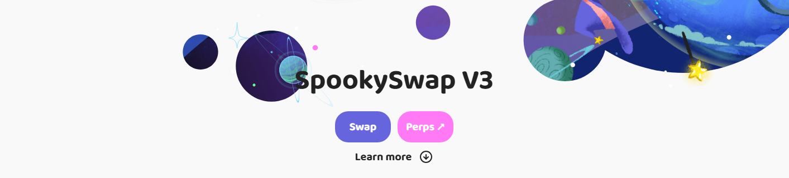

.png)
This guide is your field manual for SpookySwap. It explains how the router weighs effective price (output minus gas/fees), when to prefer SpookySwap v2 vs SpookySwap v3, and what to know about the SpookySwap Bridge basics for moving assets between chains before/after you trade on Fantom.
SpookySwap v2 vs SpookySwap v3 — Which Pool Should You Use?
SpookySwap v2 uses classic AMM math with distinct volatile and stable pools. Volatile suits non-correlated pairs (e.g., FTM/ALT), while stable pools focus on correlated assets (e.g., stablecoins or wrap pairs), offering tighter execution near parity. SpookySwap v3 introduces concentrated liquidity — LPs set price ranges, deepening liquidity where trades occur and often improving price for active ranges.
Comparing SpookySwap v2 vs SpookySwap v3 (Execution View)
| Dimension | SpookySwap v2 | SpookySwap v3 |
|---|---|---|
| Liquidity Profile | Spread across the full curve (volatile/stable models) | Concentrated near active price ranges for deeper local liquidity |
| Best For | General-purpose swaps, stable pairs & majors with steady depth | Pairs with targeted liquidity and active trading ranges |
| Slippage Behavior | Predictable; depends on pool depth and size | Can be very tight within LP ranges; may widen outside ranges |
| Gas Considerations | Typically simple routing; low Fantom gas | Similar gas; focus remains on net outcome (price minus gas) |
Swap Methods on SpookySwap (Router, v2/v3 Pools, and Alternatives)
Depending on size, volatility, and pair depth, you might prefer direct SpookySwap v2/v3 pools or let the router hop via wFTM and combine pools. For cross-chain moves, use a reputable bridge first, then execute locally on SpookySwap for the actual swap leg.
Method Comparison (Execution & Practical Trade-Offs)
| Method | Best For | Key Features | Considerations |
|---|---|---|---|
| SpookySwap Router | Net-best execution on Fantom | Chooses between SpookySwap v2/v3, may hop via wFTM, balances output vs gas | Always verify token contracts; inspect route preview on larger trades |
| Direct v2 Pool | Straightforward swaps | Stable/volatile models with transparent fees | May miss better price in a v3 range or multi-hop route |
| Direct v3 Pool | Tight slippage near active ranges | Concentrated liquidity increases depth around market price | If price drifts outside ranges, slippage can increase |
| Aggregator (External) | Broader venue scan | Can compare SpookySwap with other DEXs | Extra hop complexity; evaluate net effect (gas + route) |
SpookySwap Bridge — What to Know Before Moving Assets
The term SpookySwap Bridge is often used informally for moving funds to Fantom before swapping on SpookySwap. Bridges differ in trust models, fees, and settlement times. Use a reputable cross-chain bridge, verify the destination token contract on Fantom, and keep FTM ready for gas on arrival. After bridging, complete your trade on SpookySwap v2 or SpookySwap v3 depending on pair depth.
Bridge Checklist (Security & UX)
- Bridge only from official URLs; beware phishing domains.
- Confirm the exact Fantom token address you will receive (wrapped vs native variants).
- Bridge a small test first; then size up if everything matches.
- Upon arrival, keep a buffer of FTM for approvals and swaps on SpookySwap.
Fees on SpookySwap — Gas, Pool Fees, and Price Impact
On Fantom you pay gas in FTM plus the AMM pool fee. Your effective price equals the received output after subtracting gas, pool fees, and the implicit cost of price impact. SpookySwap’s router aims to minimize this total.
Typical Fee Components
| Fee Type | Typical Range | Notes |
|---|---|---|
| Gas (FTM) | Low on Fantom | Keep a buffer for approvals + swap; raise priority in volatile windows. |
| Pool / Liquidity Fee | ~0.05%–0.3% (varies) | Differs by pool tier and model (v2 stable/volatile, v3 ranges). |
| Price Impact | Depth-dependent | Higher for thin pairs or large trades; consider splitting size. |
SpookySwap Safety — MEV, Slippage, and Allowance Hygiene
SpookySwap is non-custodial, but poor settings can still hurt outcomes. Practical protections below will meaningfully reduce avoidable risk and failed transactions.
Practical Protections
- Verify token contracts: Use FTMScan or official project links; beware ticker clones.
- Slippage discipline: 0.1–0.5% for liquid majors/stables; wider for long-tail tokens.
- MEV-aware flow: Prefer private/builder RPC if available; split size to reduce footprint.
- Allowances: Approve the minimum required; periodically revoke stale approvals.
- Test first: Start with a small swap to validate routing and tokens.
Authoritative Sources & Tooling
Use official documentation, reputable explorers, and wallet security guides to validate every step of your SpookySwap flow.
- FTMScan — Verify token contracts and track Fantom transactions.
- MetaMask Learn — Wallet approvals, gas, and security tips.
- Uniswap Docs — AMM concepts that also inform SpookySwap v2/v3 mechanics.
SpookySwap FAQ — Bridge, v2, v3, Routing
What’s the practical difference between SpookySwap v2 and SpookySwap v3?
SpookySwap v2 uses classic AMM pools (stable/volatile). SpookySwap v3 concentrates liquidity near the active price, which can tighten slippage for trades within those ranges. The router often chooses whichever path yields better effective price after gas.
How do I use the SpookySwap Bridge safely?
Use only reputable cross-chain bridges from official URLs. Bridge a small amount first, verify the destination token contract on Fantom, and keep FTM for gas after funds arrive. Then complete your swap on SpookySwap v2/v3.
How should I set slippage on SpookySwap?
Stables & majors: 0.1–0.5% typically. Thin pairs: wider tolerance depending on depth. If you keep failing, refresh quotes and increase tolerance modestly or split size.
How can I reduce MEV risk on SpookySwap?
Prefer private/builder RPC if supported, use tighter slippage, avoid peak volatility, and split large orders. Faster inclusion (higher priority fee) reduces mempool exposure.
Why did my final output differ from the quote?
On-chain state changes, gas, pool fees, and path selection can shift realized output. Always evaluate effective price (received minus costs), not just quoted tokens.
Do I need KYC to use SpookySwap?
SpookySwap is a wallet-connected DEX on Fantom. Typically, no KYC is needed to swap; however, follow your local regulations for record-keeping and tax reporting.
How big can I trade on SpookySwap without heavy slippage?
It depends on pool depth (v2/v3) and whether liquidity is concentrated near price. For larger size, split orders across time or venues and compare v2 vs v3 route previews.
How do I verify I’m swapping the correct token on SpookySwap?
Match contract addresses via FTMScan or official project docs. Avoid relying on tickers or logos alone; many clones reuse symbols.
My transaction failed — next steps?
Re-quote, slightly widen slippage, and bump priority fee. Confirm allowances and token contracts. If needed, revoke and re-approve the minimum required amount.